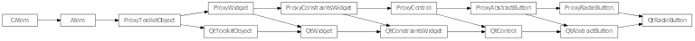
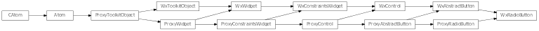

Bases: enaml.widgets.abstract_button.AbstractButton
An exclusive checkable button represented by a standard radio button widget.
Use a radio button to toggle the value of a boolean field. For a group of radio buttons with the same widget parent, only one radio button may be selected at a time. This makes groups of radio buttons useful for selecting amongst a discrete set of values. For multiple groups of independent radio buttons, place each group of buttons in their own Container.
The interface for AbstractButton fully defines the interface for a RadioButton.
Radio buttons are checkable by default.
A reference to the ProxyRadioButton object.

Bases: enaml.qt.qt_abstract_button.QtAbstractButton, enaml.widgets.radio_button.ProxyRadioButton
A Qt implementation of an Enaml RadioButton.
A reference to the widget created by the proxy.
Create the underlying radio button widget.

Bases: enaml.wx.wx_abstract_button.WxAbstractButton, enaml.widgets.radio_button.ProxyRadioButton
A Wx implementation of an Enaml ProxyRadioButton.
WxRadioButton uses a custom wx.RadioButton control. Radio buttons with the same parent will be mutually exclusive. For independent groups, place them in their own parent component.
A reference to the widget created by the proxy.
Creates the underlying custom wx.RadioButton control.
Initialize the radio button control.
Sets whether or not the widget is checkable.
This is not supported in Wx.
Returns the checked state of the widget.
Sets the widget’s checked state with the provided value.